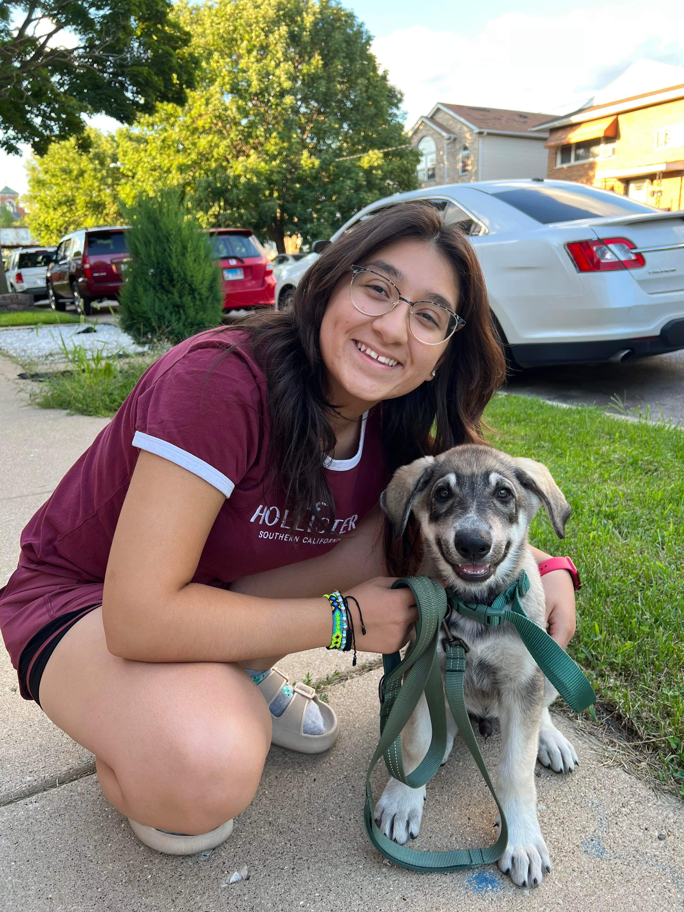
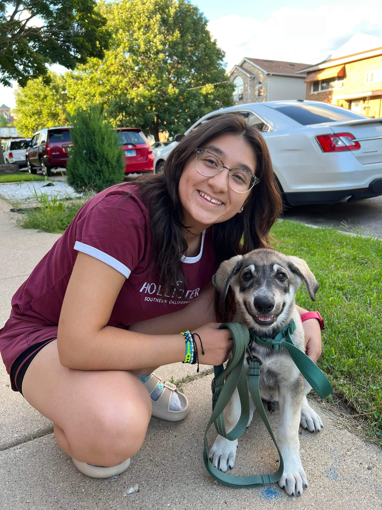
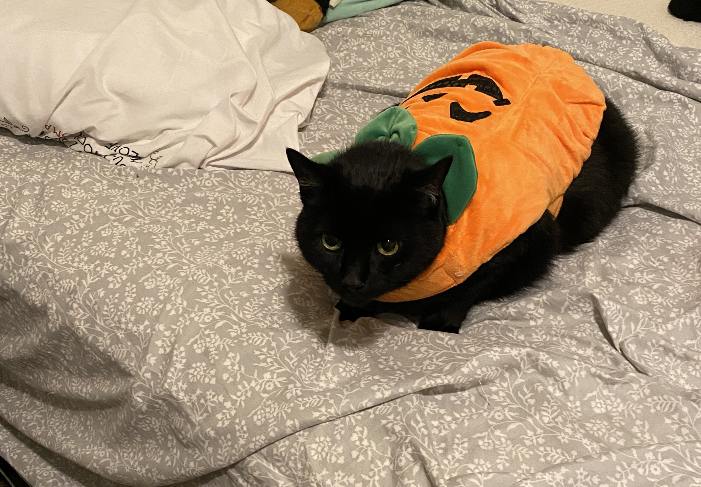
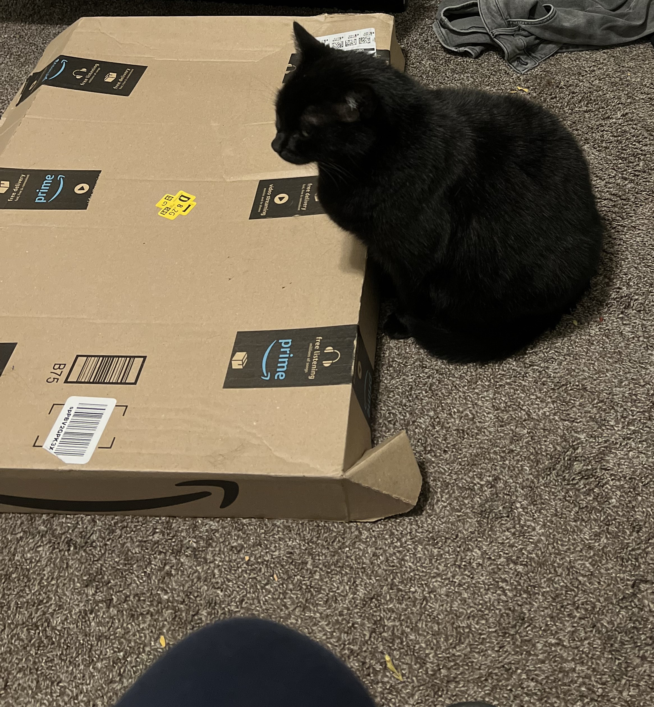
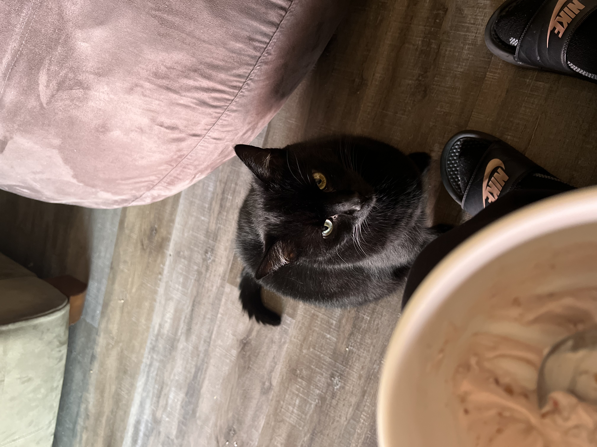
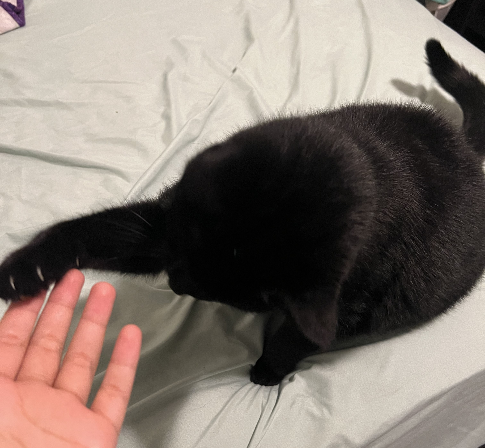
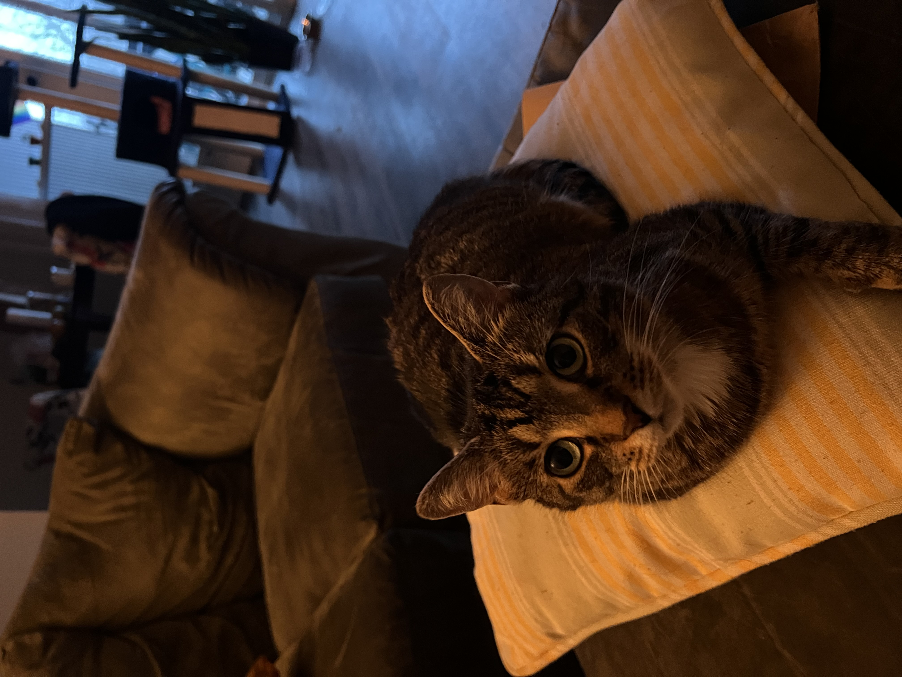
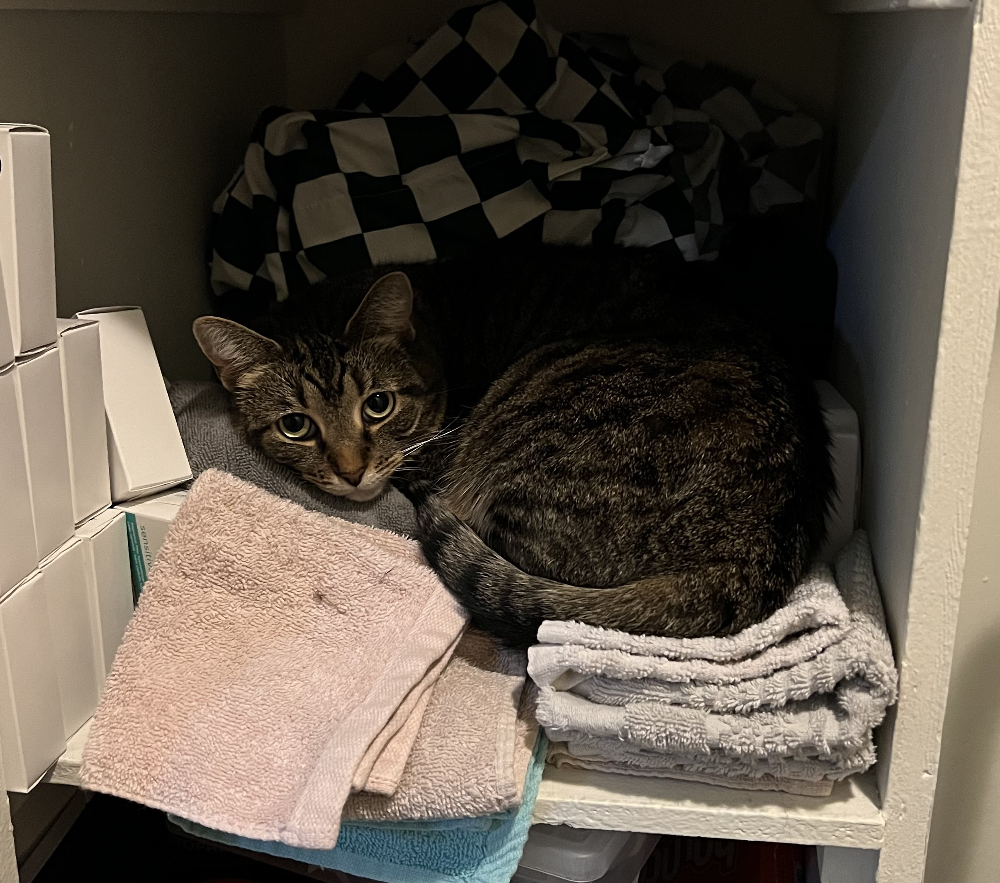
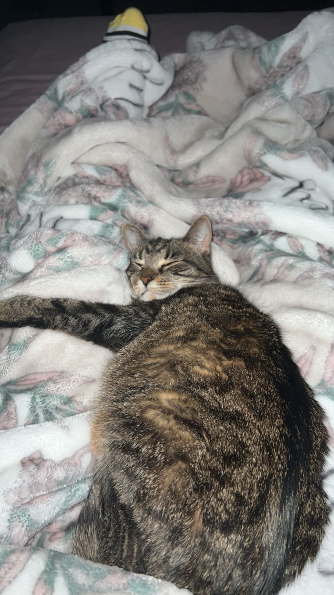

Pets
Bacon Q Dog

Bacon Q. Dog is a 9yr old labradoodle. He prefers to spend his days lounging among the three different beds/couches that his family has gifted him. He enjoys a walk or two around the neighborhood, as long as he can pretend that he doesn't see any of the other animals to avoid the embarrassment of not wanting to admit he has no wolf-like skills in chasing them.
At night just as the rest of the family is ready to relax, Bacon suddenly wants to release all of his energy. He will place his toys on a mini couch and frantically drag the couch around, giving his toys "a ride." There is also a lot of rolling. Lots and lots of rolling.
Photo Gallery


Likes
- Belly rubs
- Playing tug-of-war
- Sneaking onto the couch
Fitz

Loves chasings tennis balls, chipmunks, squirrels, and birds. Often found sitting by the fire in wintertime, and in sun patches when available. He's energetic, mischievous, and easily bored. He loves people and gets grumpy if left without a lap too long.
Loves barking up trees, running around on the lawn, and digging in the dirt looking for moles. He especially likes getting treats and whines when he comes inside and doesn't get a snack.
Photo Gallery


Likes
- Blankets
- Being warm
- Barking
Zeus

Zeus is a 2 year old Husky/German Shephard mix. He is a very silly dog who has tons of energy. He loves to run and dig holes all around the yard. He also loves to play with other dogs and is very clumsy. He also enjoys singing while being bathed.
Zeus has crazy zoomies and is a very big dog with massive paws. He loves treats and chicken. He also enjoys disobeying any rules. He loves to play with and bite anything around the house. He is a cute dog that has tons of love to give and will protect his family.
Photo Gallery
 

Likes
- Chicken and Beans
- Acting silly
- Digging holes
Zach
Zach is my roommate's 10 year old cat. Zach is a very chill cat that never makes much noise. He can be very cuddly and then when he's had enough cuddles, he leaves. He also scurries away when new people come to visit our apartment. Sometimes Zach is sneaking but I can hear him and I pretend I don't see or hear him. Zach also likes to watch me from the corner of the door very creepily.
Zach is very black cat who's chunky but very cute. He is obsessed with milk and will sit patiently to get some type of food/drink from you. I was able to train Zach to sit and to give me his paw to prove that cats could be trained. He also loves to play with toys and is good at hunting. He also loves boxes.
Photo Gallery
  Likes
- Milk
- Napping
- Boxes
Jynx
Jynx is my other roommate's cat. Jynx is a very skinny and fast cat. She is also a tabby. Jynx is SUPER cuddly. She will lay in your lap forever. Jynx is also a very talkative cat. She can and will meow for hours if we don't give her what she wants. She also sheds A LOT of hair.
Jynx will have the zoomies at 3 am and will run all over the room. She will also run towards the window and look outside then run around the room again. She loves to play with her toys and is very picky with food and treats. Jynx breath also smells pretty bad because she has a certain condition.
Photo Gallery
 Likes
- Running after using the bathroom
- Cuddles
- Playing with toys